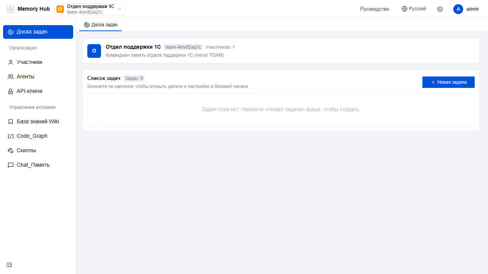
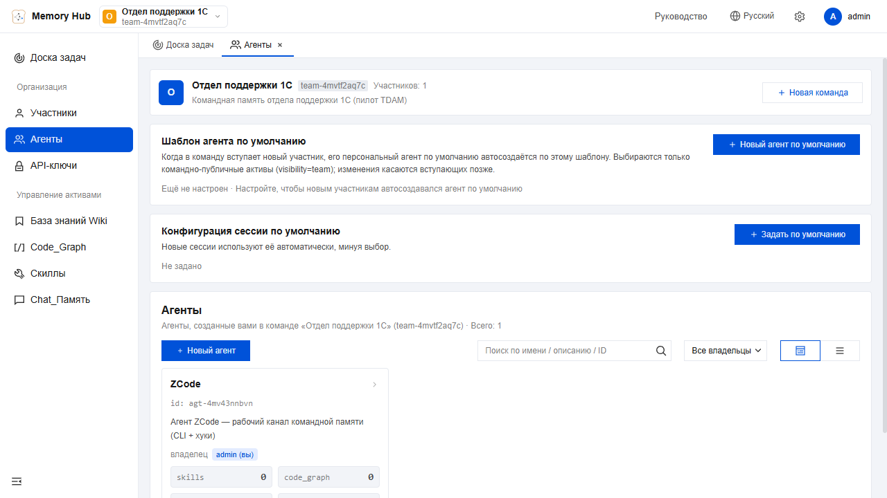
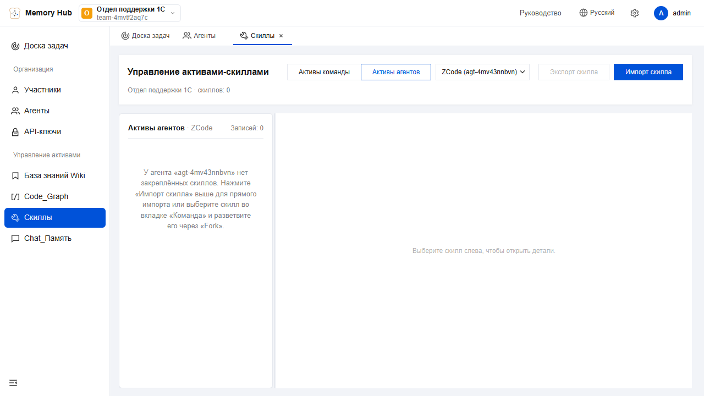
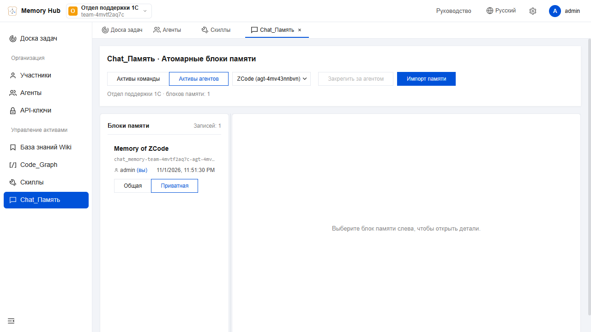
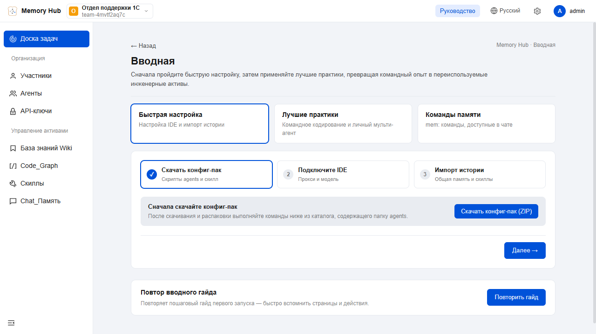

TDAM — TencentDB Agent Memory
Одна общая память отдела: диалоги всех сотрудников и агентов попадают в одно хранилище, а каждый новый диалог автоматически получает из него самое нужное.
Что такое TDAM →Запись: сначала всё дословно, разбор — потом. Чтение: в диалог впрыскивается только релевантное. Слои от сырых реплик до персоны.
Принципы работы →Находит и по словам, и по смыслу: полнотекстовый поиск с русским стеммером плюс векторный. Порог релевантности отсекает шум.
Гибридный поиск →Уроки из ошибок, задачи и артефакты записываются командными типами work_* — пойманное на одной машине становится общим для всех.
Командный режим →Два инстанса: рабочая машина (пилот) и сервер SRV-1-1 — пять служб Windows с автозапуском, без входа пользователя.
Развёртывание →Memory Hub в браузере: команда, агенты, скиллы, Wiki и память. Вход — по личному user_key, который выдаёт администратор.
Руководство →1Что такое TDAM
Раздел основан на документации авторов проекта (перевод и пересказ их README) и описывает замысел системы.
Зачем это нужно
Авторы начинают с практического вопроса: как сократить повторяющуюся работу при использовании агентов? Если контекст проекта уже был объяснён — не нужно повторять его в новой сессии. Если документы уже прочитаны — каждому агенту не нужно начинать с первой страницы. Рабочий процесс, который уже работает, не нужно заново изобретать в следующий раз.
Память здесь — больше, чем «запоминание разговоров»: любая информация, которая помогает следующему агенту не изобретать велосипед, сохраняется, организуется и переиспользуется.
Существующая информация → Переиспользуемые активы памяти →
→ Меньше ходов → Меньше переделок → Стабильнее результаты и выше эффективностьНакопленный опыт передаётся следующему агенту
Memory Hub для команд агентов замыкает цикл всего жизненного пути опыта: работа создаёт активы, активы циркулируют по команде, а новые участники в первый же день загружают «сейв» команды.
- Автоматическое извлечение активов: Chat Memory и скиллы извлекаются из диалогов и задач; документы и код превращаются в Wiki и CodeGraph; затем всем этим управляют, проверяют и маршрутизируют единообразно.
- Переносимость и совместимость с несколькими агентами: активы памяти отвязаны от фреймворков агентов — они переезжают между фреймворками и используются совместно несколькими агентами и участниками.
- Дружелюбие к холодному старту: импортируйте существующие документы, кодовые базы и сессии диалогов — новая команда агентов стартует с уже накопленного опыта, а не учится с нуля.
Четыре семейства активов памяти
| Актив | Что делает | Цитата авторов |
|---|---|---|
| 🧠 Chat Memory | Хранит предпочтения, факты, решения и историю взаимодействий. Каждый агент при создании автоматически получает свою память. | «Не рефактори старый модуль авторизации — мобильное приложение его ещё использует». Такой дорогой контекст не должен зависеть от того, повторят ли его люди в очередной раз. |
| ⚡ Скиллы | Библиотека экспертизы: версии, файлы-ресурсы, границы срабатывания, шаги исполнения и правила проверки. Личные скиллы приватны; после проверки открываются команде. | Разбор инцидентов, ревью кода, чек-листы релизов — выучите один раз, и пользоваться сможет вся команда. |
| 📖 Wiki | Документация, спеки и регламенты — в структурированные страницы с графом ссылок (вдохновлено «LLM-базой знаний» А. Карпаты). | Избавляет агентов от чтения всех списков файлов перед началом работы. |
| 🗺️ CodeGraph | Индексирует символы кода, файлы, связи вызовов и пути влияния. | Не просто «код здесь», а «изменишь это — может пострадать вот это». |
Активы памяти, а не склад логов чатов
RAG отвечает на вопрос «что можно найти?». Командная память отвечает ещё и на вопросы «кто может этим пользоваться, какая версия актуальна и какому агенту это выдать»:
| История чатов | Обычный RAG | TDAM | |
|---|---|---|---|
| Межсессовое понимание пользователя | △ | △ | ✅ Chat Memory |
| Дистиллированный исполняемый опыт | — | — | ✅ Скилл |
| Структура и связи документов | — | △ поиск фрагментов | ✅ Wiki + граф ссылок |
| Графы вызовов кода и охват влияния | — | △ текстовый поиск | ✅ CodeGraph |
| Владелец / версия / статус | — | — | ✅ |
| Командный доступ и снаряжение агентов | — | — | ✅ |
| Приватное / командное / ACL | — | △ | ✅ |
Эффективность (бенчмарк авторов)
Бенчмарк PersonaMem проверяет, способен ли агент корректно понять и применить информацию о пользователе после длительных взаимодействий: без памяти — 48%, с включённой памятью — 76% (+59% относительно).
2Принципы работы
Как устроена память изнутри: два контура, четыре слоя, конвейер обработки, гибридный поиск и правила доступа. Схемы — интерактивная переработка наших документов и описания авторов.
Двухконтурная память
Ключевой принцип — память двухконтурная:
- Контур записи — «сначала всё, потом разбор»: каждый диалог дословно сыпется в хранилище, а фоновый конвейер с помощью LLM перегоняет сырьё в компактные знания.
- Контур чтения — «не всё, а релевантное»: в начало диалога впрыскивается краткая сводка (кто вы для меня, чем занимались), к каждой реплике — памятки по её теме.
Человек видит только результат; вся механика — автоматическая. Центральный узел — Gateway: единственная точка, которая умеет и писать, и читать, и запускать конвейер. Клиенты никогда не трогают файлы хранилища напрямую.
Слои памяти L0–L3
Сырьё и знания разделены на четыре слоя — от «сырого» к «осмысленному» (терминология авторов: Диалог → Атом → Сценарий → Персона):
| Слой | Что это | Типы записей | Аналогия | Где живёт |
|---|---|---|---|---|
| L0 Диалог | Дословные реплики всех диалогов, полный контекст | — | протокол стенографистки | SQLite |
| L1 Атом | Атомарные памятки: факты, правила, события; приоритет 0–100 | persona / episodic / instruction; в командном режиме ещё work_* (§2.7) | стикеры на доске | SQLite |
| L2 Сценарий | Сцены — тематические блоки контекста по проектам/темам | md-файлы сцен | папки дел | scene_blocks\ |
| L3 Персона | Долгосрочный профиль: архетип, предпочтения, наблюдения | — | досье | persona.md |
Движение информации — только вверх: L0 → L1 → L2 → L3, каждый слой делает следующий компактнее и обобщённее. Обратно ничего не течёт: сцены и персона — это обобщение памяток, а не их замена.
Контур записи: как реплика становится знанием
Контур чтения: как память попадает в диалог
Поиск: гибрид двух механизмов
Активы памяти и управление доступом
Все активы (Chat Memory, скиллы, Wiki, CodeGraph) регистрируются единообразно. Memory Hub через фиксированную привязку + ACL определяет, какими активами данный агент может пользоваться: сначала сужается круг разрешений по команде, пользователю, агенту и видимости, затем поиск выполняется по текущему запросу. Знания не впрыскиваются целиком — они вызываются по требованию.
| Видимость | Семантика (из описания авторов) |
|---|---|
private | Читать может только владелец — даже админам команды недоступно |
team | Участники команды могут читать; управлять — владелец / админ |
restricted | Точечный доступ через ACL: пользователи / роли / агенты |
agent | Адресное снаряжение агентов внутри одной команды |
Роли двух уровней: глобальный системный администратор управляет пользователями и командами; роли уровня команды — админ (управляющий командой) и участник. Принадлежность актива отслеживается через владельца: владелец автоматически имеет права управления своими активами.
Командный режим извлечения (prompts.mode = code)
Наша доработка режима работы памяти: конвейер извлечения переводится на командные рабочие типы — урок, пойманный на одном рабочем месте, становится общим для всех машин:
| Тип | Что пишется |
|---|---|
work_fact | Устойчивые факты об инфраструктуре, конфигурациях, правилах |
work_task | Текущие задачи и их состояние |
work_method | Уроки из ошибок — общим каналом (главная ценность: чтобы не повторялись) |
work_artifact | Созданные артефакты и их расположение |
Старые типы (persona / episodic / instruction) сохраняются и продолжают пополняться. Режим включается в gateway-config.yaml (prompts.mode: "code") — машинно-зависимая настройка, на каждой машине отдельно.
Подпись и единое пространство (правило от 08.11.2026)
- Память команды едина: «ничьих», дефолтных пространств нет. Каждая запись обязана иметь владельца — тройку «команда → агент → пользователь».
- Запись без подписи запрещена — запрет реализован в коде на шлюзе (закрытие неподписанных путей), а не в правилах агента: правила содержат только положительный контракт.
- Агент получает подпись декларацией (конфигурация канала), не автодетектом: кто агент — решает конфигурация.
- Личный пул агента — штатное следствие подписи: отдельный агент = отдельный пул; общий опыт — командный слой, выдаваемый по правам.
3Архитектура и узлы
Портреты узлов системы, хранилище, каналы доступа и конфигурация. Всё основано на реальном развёртывании.
Узлы системы
| Узел | Роль | Порт |
|---|---|---|
| MemoryCore Gateway (служба TDAM-Gateway) | Ядро: все маршруты API, конвейер L0→L3, дедуп, гибридный поиск, таймер-сканер, подпись записей. Один процесс Node.js. | 8420 |
| Панель Memory Hub (TDAM-Panel) | Веб-панель: команда, участники, агенты, API-ключи, Wiki, CodeGraph, скиллы, Chat_Память. Прод-сборка раздаётся backend'ом. | 8123 |
| MCP-over-HTTP (TDAM-MCP) | Те же инструменты памяти как MCP-сервер для клиентов с поддержкой MCP. | 8900 (loopback) |
| Веб-вьюер (TDAM-Web) | Read-only просмотр памяти в браузере. | 8901 (loopback) |
| Ollama bge-m3 (TDAM-Ollama) | Локальные эмбеддинги для векторного поиска (только на сервере). | 11434 (loopback) |
| «Мозг» — LLM | Внешний канал AITUNNEL (deepseek-v4.1-flash): извлечение и структурирование памяти. Без него запись идёт, знания не рождаются. | 443 наружу |
| Memory Proxy не развёрнут | Авторский вариант подключения IDE через прокси-перед (порт 8096 по умолчанию). В нашем развёртывании агенты подключаются хуками, CLI и MCP напрямую к шлюзу. | — |
Хранилище
Каталог данных задаётся переменной TDAI_DATA_DIR явно (на сервере — D:\TDAM\data), чтобы не зависеть от профиля учётки. Внутри:
| Что | Файл/папка | Содержимое |
|---|---|---|
| Слои L0 и L1 | SQLite-база + дневные журналы records/*.jsonl | Дословные реплики, атомарные памятки, FTS5-индекс |
| Векторы | vectors.db | Эмбеддинги памяток для семантического канала |
| Сцены L2 | scene_blocks\*.md | Тематические блоки контекста (переносимы и читаемы) |
| Персона L3 | persona.md | Долгосрочный профиль |
Каналы доступа
| Канал | Кто запускает | Когда |
|---|---|---|
| Хуки ZCode (SessionStart, UserPromptSubmit, PostToolUseFailure) | Клиент, всегда | Старт диалога → recall; каждая реплика → search; ошибка инструмента → автофиксация в L0 |
CLI memory.mjs | Агент по скиллу | Перед рабочим вопросом — search, после содержательного обмена — capture |
HTTP API (Bearer-ключ, x-tdai-service-id для /v2) | Удалённые агенты, скрипты | То же самое с любой машины сети |
MCP (:8900) | Клиенты с MCP | Инструменты memory_search / memory_capture / memory_recall / conversation_search |
Панель :8123 / вьюер :8901 | Человек | Просмотр, управление, командная структура |
Конфигурация
Два файла на машину (оба — вне git):
gateway-config.yaml— конфиг шлюза: порт и хост сервера, каталог данных, режим извлечения (prompts.mode), параметры LLM (baseUrl, модель, maxTokens, таймаут), секции memory (capture/extraction/persona/pipeline/recall/storeBackend/embedding) и skill (routing/extraction/resources), BM25-язык.gateway.env— все секреты в одном файле (не в git, не в реестре, не в системных переменных): ключ LLM (TDAI_LLM_API_KEY), служебный Bearer-ключ шлюза (TDAI_GATEWAY_API_KEY), ключ администратора панели (TDAI_ADMIN_USER_KEY), путь данных (TDAI_DATA_DIR). Запускалки служб читают его при старте и передают значения процессам. Комментарии в файле — только на отдельных строках: хвостовой комментарий делает ключ «мёртвым».
Безопасность и границы
- Все сервисы локальные; наружу выставляются только шлюз :8420 (Bearer-ключ на каждый запрос, кроме /health) и панель :8123 (собственная авторизация по user_key). MCP :8900 и вьюер :8901 — loopback.
- Для /v2-маршрутов нужен и Bearer, и заголовок
x-tdai-service-id— одного ключа мало. - Память общая: пишут все — читают все (в пределах прав видимости активов). Персональные данные, пароли и ключи в память не записываются (дисциплина, закреплённая в стандарте §7 и в mem-правилах).
- Память — источник гипотез: найденное стоит сверять с актуальными документами.
4Развёртывание
Два инстанса TDAM: рабочая машина (пилот) и сервер отдела SRV-1-1 (опытная эксплуатация). Код общий — через репозиторий SIUSTDAM; данные у каждой машины свои.
Два инстанса
| Рабочая машина (10.30.37.95) | Сервер SRV-1-1 (10.30.23.20) | |
|---|---|---|
| Роль | Пилот, разработка и настройка | Опытная эксплуатация для отдела (Windows Server 2019) |
| Репозиторий | E:\LocalGit\TencentDB-Agent-Memory (головной, push в sync) | D:\.LocalGit\SIUSTDAM (клон, pull) |
| Стык | C:\TDAM (junction agent-memory → клон) | C:\TDAM (junction agent-memory → клон) |
| Данные | ~\.memory-tencentdb\ | D:\TDAM\data (TDAI_DATA_DIR) |
| Эмбеддинги | AITUNNEL text-embedding-3-small, 1536 dim | Локальная Ollama bge-m3, 1024 dim основной канал |
| «Мозг» LLM | AITUNNEL · deepseek-v4.1-flash (ключ владельца — только в gateway.env) | |
| Автозапуск | 4 Startup-ярлыка tdam-*.lnk (идемпотентные лаунчеры) | 5 служб NSSM (запуск при загрузке, без входа пользователя) |
| Наружу | Шлюз :8420, панель :8123/:5173 — в LAN | Только шлюз :8420 и панель :8123 — пилотно из 10.30.37.0/24 |
| Обмен | Код — GitHub (sync); данные памяти — не синхронизируются между машинами автоматически | |
Топология сервера
Службы Windows (NSSM) на сервере
| Служба | Запускает | Порт | Зависит от |
|---|---|---|---|
| TDAM-Ollama | cmd /c D:\TDAM\ollama-serve.cmd | 11434 (localhost) | — |
| TDAM-Gateway | powershell -File D:\TDAM\gateway-run.ps1 | 8420 | TDAM-Ollama |
| TDAM-MCP | powershell -File D:\TDAM\mcp-run.ps1 | 8900 (localhost) | TDAM-Gateway |
| TDAM-Web | powershell -File D:\TDAM\web-run.ps1 | 8901 (localhost) | TDAM-Gateway |
| TDAM-Panel | powershell -File D:\TDAM\panel-run.ps1 | 8123 | TDAM-Gateway |
| TDAM-Docs | powershell -File D:\TDAM\docs-run.ps1 | 8788 | — (не зависит от узлов памяти) |
Каждая служба запускает скрипт-обёртку с фиксированным именем в D:\TDAM: тело обёртки можно менять в любой момент, не пересоздавая службу. Обёртка держит процесс в переднем плане (без Start-Process-детача — иначе процесс тихо гаснет, находка 19). NSSM супервизит процесс и перезапускает при сбое; логи stdout/stderr — в D:\TDAM\logs\ с ротацией 10 МБ. Учётка служб — LocalSystem.
Раскладка на дисках сервера
| Что | Путь |
|---|---|
| Клон проекта | D:\.LocalGit\SIUSTDAM (ветка pilot-patches) |
| Стык (рабочие скрипты) | C:\TDAM — внутри junction agent-memory → клон; gateway-config.yaml, gateway.env, node.exe |
| Данные памяти | D:\TDAM\data |
| Модели Ollama | D:\TDAM\ollama-models |
| Логи служб | D:\TDAM\logs\ (+ журналы запускалок в C:\TDAM) |
| Инсталляторы | D:\install\<продукт> — правило: качаем сюда и ставим из этой папки |
| Документация | D:\TDAM-Документация (9 файлов + схема) |
Сеть и доступ
| Порт | Служба | Доступ |
|---|---|---|
| 22 | OpenSSH Server | вход по ключу, только из 10.30.37.0/24 |
| 8420 | Gateway | пилот: только из 10.30.37.0/24; Bearer-ключ обязателен (кроме /health) |
| 8123 | Панель | пилот: только из 10.30.37.0/24; авторизация по user_key |
| 8900 / 8901 | MCP / вьюер | только localhost |
| 11434 | Ollama | только localhost |
Правила брандмауэра: TDAM-SSH-22, TDAM-Gateway-8420, TDAM-Panel-8123 (профиль Any, источник 10.30.37.0/24). Проверено с рабочей машины: health ok, панель HTTP 200.
Установка с нуля (порядок)
Полная последовательность развёртывания (Windows, PowerShell от администратора)
- SSH-доступ: OpenSSH Server (MSI) + ключ агента + правило 22 из подсети.
- Node и Git: MSI/exe в
D:\install\nodejsиD:\install\git, тихая установка, машинно. - Клон:
git clone https://github.com/dsv180/SIUSTDAM.gitвD:\.LocalGit, веткаpilot-patches; ремоуты:sync= SIUSTDAM,origin= вендор (push отключён). - Стык:
C:\TDAM+ junctionagent-memory→ клон; скрипты изdeploy\scripts→C:\TDAM; конфиг шлюза →C:\TDAM(перезапись — только с--force-config). - Зависимости — 4 установки npm: в
MemoryCore, вC:\TDAM, вMemoryPanel, вMemoryPanel\web; затем сборка панелиnpm run build. Всегда--registry=https://registry.npmjs.org, неnpm ci. - Конфигурация:
gateway.env(ключи — только с разрешения владельца), реестр инстансов панелиMemoryPanel\config\metadata-instances.json— строго без BOM. - VC++ Redistributable (для нативного @node-rs/jieba).
- Ollama: zip-архив →
C:\Program Files\Ollama(проверка sha256),OLLAMA_MODELS=D:\TDAM\ollama-models, занос модели bge-m3. - NSSM →
C:\Windows\nssm.exe; пробная служба → боевые службы (автозапуск, зависимости, логи с ротацией). - Администратор панели:
POST /v3/internal/meta/user/init-admin→ user_key показывается один раз → вgateway.env. - Приёмка: health зелёный; capture → end → search находит; панель открывается и полностью русская; MCP initialize отвечает; иероглифов нигде нет.
Обновление кода
cd D:\.LocalGit\SIUSTDAM
git pull sync pilot-patches
# если менялись зависимости — npm install в нужных папках (MemoryCore, C:\TDAM, MemoryPanel, MemoryPanel\web)
# если менялся фронт панели — cd MemoryPanel\web ; npm run build
nssm restart TDAM-Gateway # перезапуск затронутых службРегламент источников — doc\ИНСТРУКЦИЯ-АГЕНТУ-ОБНОВЛЕНИЕ-РЕПОЗИТОРИЯ.md. Обновления приходят из головного репозитория SIUSTDAM (sync); push на вендора отключён.
5Руководство Memory Hub
Раздел воспроизводит «Руководство» из веб-панели (кнопка «Руководство» в правом верхнем углу, 127.0.0.1:8123/#/guide) — материал авторов продукта. Наша специфика подключений отмечена врезками.
Страницы панели
| Страница | Что здесь |
|---|---|
| Доска задач | Задачи, привязанные к сессиям и агентам; названия и описания ведутся mem-командами (§5.4) |
| Организация → Участники | Люди команды; каждому — свой пользователь и user_key (создаёт админ) |
| Организация → Агенты | Агенты команды; каждому назначаются свои активы (снаряжение) |
| API-ключи | Ключи для входа участников и для подключаемых IDE |
| База знаний Wiki | Структурированные страницы с графом ссылок из документов |
| Code_Graph | Индекс кодовых баз: символы, файлы, связи вызовов, пути влияния |
| Скиллы | Библиотека дистиллированных процессов: версии, ресурсы, границы срабатывания |
| Chat_Память | Памятки и сцены; просмотр и поиск накопленного опыта |
Ниже — скриншоты реальной панели (пилот: в команде пока один участник и один агент):





Быстрая настройка (3 шага)
Шаг 1 — Скачать конфиг-пак
Кнопка «Скачать конфиг-пак (ZIP)» в руководстве отдаёт архив со скриптами agents/ (агентские скиллы и мастер настройки). После скачивания и распаковки команды выполняются из каталога, содержащего папку agents.
Шаг 2 — Подключите IDE
- Прокси:
http://127.0.0.1:8096(Memory Proxy; адрес берётся из настроек инстанса). - Режим: «Обычный» — запросы пересылаются как обычно; «Analyse» — дополнительно анализируется, как найденные активы помогли ответу, и результат возвращается в ответе.
- API Key: тот же ключ, что и для входа в панель (страница «API-ключи»).
- Вариант 1 (рекомендуется) — через скилл:
cp -r agents ~/agents, затем промпт агенту: «Прочитай ~/agents/skills/setup-proxy/SKILL.md и проведи меня по шагам из него для настройки подключения агента к Memory Proxy». Агент опросит окружение, запишет конфиг прилагаемым скриптом и спросит, импортировать ли локальные скиллы и историю чатов. - Вариант 2 — через скрипт:
bash agents/setup-proxy.sh— интерактивный мастер: сканирует конфиги, проверяет прокси, пишет выбранный IDE. - Ручная настройка: в руководстве есть готовые конфиги для Claude Code (
~/.claude/settings.json), CodeBuddy, Codex CLI, WorkBuddy, dsh, Hermes, OpenClaw. Схема адреса:http://127.0.0.1:8096/<ide>/default; пример для Claude Code — переменныеANTHROPIC_BASE_URL,ANTHROPIC_AUTH_TOKEN,ANTHROPIC_MODELв settings.json.
Шаг 3 — Импорт истории
tsx agents/asset-import.ts --source <agent> --agent-id <id> --team-id <tid>Импортирует исторические сессии и скиллы из локальных IDE. Источники: claude-code, codebuddy, codex, workbuddy, dsh, hermes, openclaw. Если импорт уже выбран в конце скрипта-настройщика, повторно запускать не нужно.
memory.mjs и MCP. Раздел про прокси — авторская схема для IDE (Claude Code и др.); пригодится, если решим подключать такие IDE.Лучшие практики
А. Командное кодирование (сотрудничество и обмен опытом)
Цепочка: Несколько IDE · Сессия + Скилл → Участники команды (Пользователь + Агент) → Библиотека общих активов (Память · Скилл · Wiki) → Межплатформенное переиспользование (постоянно обновляется).
| Шаг | Суть | Практика |
|---|---|---|
| 1. Единая личность | Одна командная личность во всех IDE | Админ создаёт отдельного пользователя и ключ для каждого участника; участники используют свой ключ в Claude Code, CodeBuddy и т.д. Не заводите пользователя на каждую IDE — это расщепляет память и права. |
| 2. Импорт истории | Опыт всех IDE сливается в одно место | Импортируйте существующие сессии и скиллы; после смены IDE вспоминаются прошлые решения, предпочтения и уроки. Перед импортом исключите ключи, личные данные и нерелевантные чаты. |
| 3. Обмен активами | Команда переиспользует проверенный опыт | Пишите в память факты проекта, решения и подводные камни; стабильные повторяемые процессы превращайте в скиллы; общие документы и долгосрочные знания — в Wiki. Открывайте команде, когда убедитесь в корректности. |
| 4. Постоянное управление | Использовать, проверять, обновлять | Устарело или неверно — обновляйте исходный актив, не плодите дубли. Используйте режим Analyse, чтобы увидеть, помогли ли найденные активы ответу. |
Б. Личный OPC (один человек — несколько агентов)
Цепочка: Несколько IDE · Единый доступ → Специализированные агенты (исследование · разработка · ревью) → Библиотека общих активов → Эстафета где угодно (не нужно заново объяснять контекст).
| Шаг | Суть | Практика |
|---|---|---|
| 1. Подключите несколько IDE | Меняйте инструменты без потери контекста | Один прокси и личный ключ во всех ваших IDE; импортируйте исторические сессии и скиллы, сохраняя свой workflow. |
| 2. Разделите агентов | Независимые роли, активы — по потребности | Создавайте агентов по обязанностям (исследование, разработка, тест, ревью); каждому — только активы его роли; общая память и скиллы могут разделяться несколькими агентами. |
| 3. Эстафета между платформами | Плавное продолжение между IDE и агентами | Выводы исследования пишите в память — агент разработки вспомнит их в другой IDE; методики тестирования превращайте в скиллы. Передача работы — через общие активы, а не копирование целых чатов. |
| 4. Сопровождение активов | Держите полезное, чистите шум | Храните обоснования, рабочие решения, причины провалов и способы проверки; устаревшие факты обновляйте; не сохраняйте светскую болтовню, догадки, ключи и личные чувствительные данные. |
Команды mem: — прямо в диалоге
Когда память подключена, команды вводятся прямо в чате с агентом. Формат — mem:<команда>, без пробела после двоеточия; имена регистронезависимы.
| Команда | Что делает |
|---|---|
mem:help | Показать справку по всем командам mem: |
mem:session-reset | Сбросить привязки команды / агента / задачи этой сессии и сразу заново открыть выбор |
mem:sync | Обновить все внедрения активов этой сессии (скилл / память / знания / описания задачи и агента) |
mem:create-skill [промпт] | Архивировать этот диалог как скилл (извлечение асинхронное); дописывает промпт для фокусировки на главном |
mem:create-task [название] | Создать задачу из контекста текущего диалога и привязать к сессии. Без аргумента — агент сам выведет название и описание; с аргументом — аргумент станет названием (до 40 символов). Если к сессии уже привязана задача — вернётся предпросмотр новой для подтверждения |
mem:create-task confirm / cancel | Перезаписать привязку и создать новую задачу / отменить без изменений |
mem:update-task [описание] рекомендуется | Обновить описание привязанной задачи (продолжать переиспользовать её, а не плодить новые). Без аргумента — агент сравнит описание с недавним диалогом; идемпотично. Если задача не привязана — попросит сначала mem:create-task |
mem:update-task confirm / cancel | Подтвердить обновление описания / отменить |
Примеры набора команд (копируются в панели всеми сразу)
mem:sync
mem:create-skill Суммируй шаги миграции БД и подводные камни
mem:create-task Рефакторинг SessionRegistrar
mem:create-task confirm
mem:create-task cancel
mem:update-task Добавь сегодняшний прогресс и оставшиеся риски
mem:update-task confirm
mem:update-task cancel
mem:session-reset
mem:helpПовтор вводного гайда
Внизу страницы руководства есть кнопка «Повторить гайд» — повторяет пошаговый гайд первого запуска, чтобы быстро вспомнить страницы и действия.
6Наши доработки (SIUSTDAM)
SIUSTDAM — отслеживаемая копия авторского репозитория, адаптированная под русский язык и наши правила использования. Всё «хорошее» — заслуга авторов; здесь — что и зачем изменили мы. Ветка pilot-patches, push на вендора отключён.
Сводная таблица доработок
| Область | Что сделано | Детали |
|---|---|---|
| Русификация панели | Локаль ru-RU заполнена с 125 до 1626 ключей, исправлены полномыточные скобки, CJK-литералы | Коммиты 3802e17, d1094cb, пересборка 3e22acd; визуальная приёмка всех страниц пройдена |
| Русификация промптов | 4 промпта ядра (L1-извлечение, дедуп, сцены L2, персона L3) + шаблоны auto-recall переведены; кириллица добавлена в разрешённые символы имён сцен | Коммиты 378ed26, 59a1abe, 8f14a94; в памяти — ноль CJK |
| Токенизация русского | Snowball-стеммер на обеих сторонах (индекс и запрос); jieba — только при иероглифах | tokenize.ts, ru-stemmer.ts; живой пробник: «регламенту/регламенте» → «регламент» |
| Гибридный поиск | Включён векторный поиск; итог — FTS5 + векторы со слиянием | Рабочая машина: AITUNNEL 1536d; сервер: Ollama bge-m3 1024d (основной канал, решение 08.11.2026) |
| Командный режим | prompts.mode: "code" — рабочие типы work_fact / work_task / work_method / work_artifact | Уроки из ошибок — общим каналом всех машин; включается машинно-зависимо |
| Подпись записей | Единое пространство, запрет неподписанных путей на шлюзе; recall/end с изоляцией пилот-патчем; дефолтные остатки вычищены | Решение 08.11.2026 (см. §2.8) |
| Развёртывание | Деплой-комплект deploy/, службы NSSM на сервере, Startup-ярлыки на рабочей, инструкция doc/install_ru.md | 5 служб с зависимостями и ротацией логов; чек-лист приёмки |
| Правки сборки/кода | Фикс сборки фронта под Windows (относительный rollupOptions.input); фронт-прокси панели подставляет Bearer сама (63ef7f0); все локальные клиенты под Bearer-гейт (memory.mjs, хуки, mcp-http, memory-web) | Ветка pilot-patches |
| Регламенты | Стандарт работы с памятью (§7), адаптеры для ZCode и dsh, SSH-доступ агента (переиспользуемый пакет) | doc/стандарт-работы-с-памятью.md и соседние |
Машинные конфиги — разные намеренно
sync-to-tdam.cmd учитывает это: существующий конфиг не трогает (перезапись — только --force-config).Границы: что НЕ трогаем
- Свои правки авторам не отправляем (поток исходящий закрыт); обновления вендора принимаем по журналу отличий.
- Китайская ветка jieba остаётся как спящий резерв: модуль загружается при первом токен-вызове (без своей нативной библиотеки процесс падает — поэтому и нужен VC++ Redistributable). Вырезание — отдельная правка форка: локально, с проверкой, потом на сервер.
- Смена модели эмбеддингов — только после корпусного замера (полный пере-эмбеддинг).
7Правила работы с памятью (регламент)
Эталон — «Стандарт работы агента с командной памятью» (принят 04.11.2026, дополнен 08.11.2026). Адаптер для ZCode живёт в AGENTS.md. Ниже — суть.
Принципы
- Гигиена сигнала: ошибки и разобранные причины значимы, успехи — шум. Лучше не записать, чем записать лишнее.
- Автономность: пользователь не должен напоминать о памяти — обращение к ней рефлекс агента.
- Видимость: при любом обращении к памяти агент сообщает одной строкой, что сделано:
[память: искал «…» → N записей]или[память: записал «…»]. Без обращения строка не пишется. - Прямая команда безусловна: «вспомни», «поищи в памяти», «запиши», «зафиксируй» — выполнять всегда.
- Подпись: запись без владельца запрещена; идентификаторы агент берёт из конфига канала.
Когда искать и когда записывать
Искать перед ответом, если тема рабочая
- вопрос касается рабочих проектов, инфраструктуры, памяти TDAM;
- вопрос про прошлое: «как мы делали X?», «что решили про Y?», «мы это обсуждали?»;
- предстоит решение, которое могло уже приниматься.
Не искать по общим вопросам вне рабочего контекста — это шум и лишние токены.
Записывать по своей инициативе
- разобранные причины сбоев (главная ценность);
- принятые решения и обоснования;
- устойчивые факты об инфраструктуре;
- правила и регламенты, согласованные с заказчиком.
Не записывать: пересказ диалога, разовые мелочи, то, что уже в файлах проекта.
Каналы в ZCode (различать)
| Канал | Как работает |
|---|---|
| Фон (автоматически) | Хуки приносят сводку на старте сессии и релевантные памятки на каждую реплику — видно в тексте промпта, не как вызов инструмента. При недоступном шлюзе тихо отступают (пустой вывод — норма). |
| Инструменты (видно в панели) | MCP-инструменты memory_search / memory_capture / memory_recall / conversation_search — либо CLI памяти, если MCP недоступен. |
События хуков: SessionStart (сводка сцен), UserPromptSubmit (памятки на реплику), PostToolUseFailure (контур ошибок; успешные вызовы намеренно не пишутся). Клиентский журнал — ~\.zcode\v2\logs\<дата>.log.
8Эксплуатация
Ежедневные проверки, управление службами, логи и обновление. Детали — 05-ЭКСПЛУАТАЦИЯ-И-ОБНОВЛЕНИЕ.md на сервере.
Проверка здоровья
curl.exe -sS -m 20 http://127.0.0.1:8420/healthОжидается JSON со "status":"ok", "vectorStore":true, "embeddingService":true, "ftsAvailable":true.
Get-Service TDAM*Все шесть служб — Running: пять узлов памяти (TDAM-Ollama, TDAM-Gateway, TDAM-MCP, TDAM-Web, TDAM-Panel) плюс TDAM-Docs (страница документации). На рабочей машине — свой набор сервисов (лаунчеры идемпотентны, node C:/TDAM/memory.mjs health).
Управление службами (сервер)
nssm status TDAM-Gateway # статус
nssm restart TDAM-Gateway # перезапуск узла
nssm stop TDAM-Panel # остановка (дети гаснут вместе со службой — проверено)
nssm start TDAM-Panel
nssm dump TDAM-Gateway # полные настройки службыПорядок при полном перезапуске: остановить верхние по зависимостям (Panel → Web → MCP → Gateway → Ollama), запустить в обратном порядке. Обычно достаточно nssm restart конкретной службы.
Логи
| Где | Что |
|---|---|
D:\TDAM\logs\<служба>-out/err.log | stdout/stderr служб, ротация 10 МБ |
C:\TDAM\<служба>-*.log | Журналы запускалок (события «spawned/skip») |
C:\TDAM\gateway-out/err-<штамп>.log | Вывод конкретного запуска gateway |
Бэкапы (зона владельца)
Критичное для сохранности: D:\TDAM\data — сама память; C:\TDAM\gateway.env — единственное место с ключами; D:\TDAM\ollama-models — модели (восстановимы скачиванием); клон D:\.LocalGit\SIUSTDAM — код (восстановим из GitHub). Регламент и расписание — решает владелец.
Известные ограничения
- Реальная перезагрузка сервера не проводилась (имитация холодного старта пройдена); проверить автозапуск после первой фактической перезагрузки.
npm installв MemoryCore завершается кодом 1 (вендорский postinstall ссылается на отсутствующий openclaw-файл) — библиотеки встают полностью, на работу не влияет.- Vite :5173 — девелоперский сервер, для работы панели не нужен (вход через :8123) и на этой платформе некорректен.
9Находки и ловушки
Сводный список по ходу русификации и развёртывания (полные версии — НАХОДКИ.md рабочей папки и 07-НАХОДКИ-И-ЛОВУШКИ.md на сервере).
Ключевые находки
| № | Находка | Статус |
|---|---|---|
| 3 | API-удаление не переписывает дневные jsonl-журналы — при чистках: API-удаление + физическая компакция при остановленном шлюзе | учтено |
| 4 | PostToolUseFailure фиксирует old_string/new_string целиком — риск утечки объёма в L0 | к разбору (лимит длины) |
| 5 | /v2 требует и Bearer, и x-tdai-service-id | учтено |
| 7 | Кириллица в правиле имён сцен — добавлена в разрешённые символы промпта | исправлено |
| 8 | Vite dev :5173 отдаёт сырой TSX — вход только через прод-сборку :8123 | не блокирует работу |
| 9 | Сборка фронта падала на Windows: абсолютный путь в rollupOptions.input — заменён на относительный | исправлено |
| 14 | sync-to-tdam.cmd сломан по путям (REPO=%~dp0 указывает на deploy\, а пути — на корень репо) | к починке; раскладка вручную |
| 15 | MemoryCore postinstall ссылается на отсутствующий openclaw-файл — npm install завершается кодом 1 при установленных библиотеках | к разбору |
| 16 | npm 11.20 не запускает install-скрипты зависимостей без разрешения (npm install-scripts approve) | учтено |
| 17 | Панельному узлу нужна четвёртая установка npm — в MemoryPanel\ | дополнить install_ru.md |
| 18 | Реестр инстансов панели metadata-instances.json — строго без BOM (иначе «invalid metadata instances config») | дополнить инструкцию |
| 19 | Start-Process-детач в запускалках гаснет через 15–40 с — службы держат процесс в переднем плане | применено в службах |
Ловушки окружения
- Большие загрузки обрываются (~420 МБ): качать
curl.exe -L -C - --retry 20 --retry-delay 5и сверять sha256;Invoke-WebRequestне возобновляет загрузку. Остановленная ssh-задача не убивает удалённый загрузчик — сначала убить процессы на сервере. - Распаковка больших архивов —
tar.exe, неExpand-Archive. - curl в PowerShell — псевдоним Invoke-WebRequest; звать
curl.exe. Старый системный curl 7.55.1 не знает--retry-all-errors— свежий ставится первым в PATH. - VC++ Redistributable нужен нативному @node-rs/jieba (иначе «The specified module could not be found»).
- node.exe в C:\TDAM — запускалки ждут его там.
- Процесс из ssh-сессии умирает с сессией; постоянные процессы — только службами; отвязанный запуск — через WMI Win32_Process.Create.
- PowerShell-файлы с кириллицей — UTF-8 с BOM (PS 5.1 без BOM читает ANSI); на сервере принято ASCII-only. Не смешивать с утилитами Git Bash.
- Проверка «без BOM» — первые байты: 239,187,191 = BOM есть.
10Справочник: CLI, API, MCP
Рабочие команды для агентов и администратора.
CLI памяти (memory.mjs)
node C:/TDAM/memory.mjs health # живость шлюза
node C:/TDAM/memory.mjs search "регламент" # поиск по памяткам
node C:/TDAM/memory.mjs capture "тема" "суть" # записать
node C:/TDAM/memory.mjs recall # сводка памяти (персона + сцены)
node C:/TDAM/memory.mjs conv "текст" # записать реплику диалога
node C:/TDAM/memory.mjs end # принудительная дистилляция сессииРучной канал агента: search перед рабочим вопросом, capture после содержательного обмена (см. §7).
HTTP API шлюза
# здоровье (без ключа)
curl http://SRV:8420/health
# авторизованный запрос (Bearer; для /v2 добавить x-tdai-service-id)
curl -H "Authorization: Bearer $TDAI_GATEWAY_API_KEY" \
-H "x-tdai-service-id: default" http://SRV:8420/v2/...
# создание администратора панели (один раз при установке)
curl -X POST "http://127.0.0.1:8420/v3/internal/meta/user/init-admin" \
-H "Content-Type: application/json" -H "x-tdai-service-id: default" \
-d "{\"username\":\"admin\"}"Полная документация API — в репозитории: MemoryCore/v3-api-memorycore-doc.md, MemoryPanel/panel-api-doc.md и соседние файлы.
MCP (проверка живости)
curl -X POST http://127.0.0.1:8900/mcp -H "Content-Type: application/json" \
-H "Accept: application/json, text/event-stream" \
-d "{\"jsonrpc\":\"2.0\",\"id\":1,\"method\":\"initialize\",\"params\":{\"protocolVersion\":\"2025-03-26\",\"capabilities\":{},\"clientInfo\":{\"name\":\"probe\",\"version\":\"0\"}}}"Ожидается JSON с serverInfo. Инструменты: memory_search, memory_capture, memory_recall, conversation_search.
11Глоссарий
| Термин | Значение |
|---|---|
| TDAM / SIUSTDAM | TencentDB Agent Memory / наш форк с адаптациями (репозиторий dsv180/SIUSTDAM) |
| Gateway | Ядро памяти (:8420) — единственная точка записи, чтения и конвейера |
| Memory Hub | Веб-панель командной памяти (:8123) |
| Памятка (L1) | Атомарное знание: одно утверждение, один факт |
| Сцена (L2) | Тематический контейнер контекста («работа над X») |
| Персона (L3) | Портрет пользователя: архетип, предпочтения, наблюдения |
| Экстракция | LLM-обработка сырых диалогов в структурированные знания |
| Дедуп / конфликт-детект | Слияние новых знаний со старыми без дублей (store/update/merge/skip) |
| Хук | Скрипт, который клиент запускает автоматически на событие (SessionStart и др.) |
| Стык C:\TDAM | Рабочий каталог скриптов и конфигов; внутри junction на клон репозитория |
| user_key | Ключ входа человека в панель; выдаётся администратором |
| Bearer-ключ шлюза | Служебный ключ API-доступа (TDAI_GATEWAY_API_KEY из gateway.env) |
| work_* типы | Командные типы памяток в режиме prompts.mode=code |
| «Мозг» | LLM, на которой работает экстракция (у нас deepseek-v4.1-flash через AITUNNEL) |
| [pilot-patch] | Наш локальный коммит поверх кода вендора в ветке pilot-patches |
12Источники и ссылки
Живые сервисы
| Адрес | Что |
|---|---|
http://127.0.0.1:8123 | Панель Memory Hub (вход по user_key; кнопка «Руководство» — источник §5) |
http://127.0.0.1:8777/tdam-srv-1-1-architecture.html | Интерактивная архитектурная схема развёртывания (Archify) |
http://127.0.0.1:8901 | Веб-вьюер памяти (read-only) |
http://10.30.23.20:8788/ | Эта документация онлайн (служба TDAM-Docs на сервере; из пилотной подсети) |
http://SRV-1-1:8420/health | Здоровье шлюза сервера (10.30.23.20, из пилотной подсети) |
Документы
- Репозиторий SIUSTDAM (
github.com/dsv180/SIUSTDAM, ветка pilot-patches): README.md (русский перевод авторского README), doc/install_ru.md, doc/стандарт-работы-с-памятью.md, doc/правила-памяти-zcode.md, doc/правила-памяти-dsh.md, ИНСТРУКЦИЯ-АГЕНТУ-ОБНОВЛЕНИЕ-РЕПОЗИТОРИЯ.md. - Рабочая папка проекта: ОПИСАНИЕ-СИСТЕМЫ.md, СТАТУС-РАЗВЕРТЫВАНИЕ.md, НАХОДКИ.md, ПЛАН-РУСИФИКАЦИИ.md, развёртывание-на-сервере\TDAM-Документация (01–07 + README).
- Сервер SRV-1-1:
D:\TDAM-Документация— тот же комплект документации + architecture-srv-1-1.html. - API-документация вендора: MemoryCore/v3-api-memorycore-doc.md, MemoryPanel/panel-api-doc.md, MemoryProxy/v3-api-memoryproxy-doc.md.